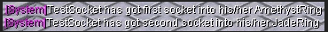
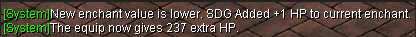

Sockets can be made by upgrading items at ArtisanWind. The classic way to get that lucky socket. Dragonballs have higher rate of sockets than Meteors. The following global message will appear when you make a socket.

You can put sockets in your weapons with Dragonballs at ArtisanOu.
100% Socket Rate
First socket = 1 Dragonball
Second socket = 5 Dragonballs
Putting gems on the equipment with sockets will bring bonus effects to your equipment. The maximum Tortoise Gems you can use for defense is 7. All other gems can limitless be used on your gear.
NOTE: Waters with high defense are not overpowered, they are like a tank in a world war.
UpgradeMaster offers you 100% upgrading on your equipment. If you want to upgrade the level it will get your meteors, else if you are trying to upgrade your quality equipment it will take your dragonballs.
NOTE: It is much more expensive than ArtisanWind in TwinCity, but it is 100% guarenteed that will upgrade.
DBUpgrader offers you 100% upgrading level on your equipment with a Dragonball.
You can compose +1 items and enchant your gears at WuxingOven. Every gem can be used to add HP to your gears. A Super DragonGem will always give +1 HP, even if the new enchant value is lower than the current enchant.
Need more defense? You can upgrade the bless of your equipment with Super TortoiseGems. The maximum bless is -7.
-1 to -3 = 1 Super TortoiseGem
-3 to -5 = 3 Super TortoiseGems
-5 to -7 = 5 Super TortoiseGems
Your dura is going to 0 very fast? No worries, DurabilityMaster can help you fix that. Instead of your main dura on your equipment, he can make it to 100/100 with a 3 Super KylinGems.
Do you want to win the GuildWar, making allies and enemies from other guilds? Just pay 1,000,000 Silver to the GuildDirector and he will create your own guild.
Eternity can help you to make your first reborn. All he need is a Celestial Stone and a certain level.
NOTE: Trojan, Archers, Warriors and Fire Taoists need to be level 120 (or higher) to make their first reborn.
NOTE: Water Taoists can make their first reborn at level 110 (or higher) depends on their choice.
NOTE: By first reborning, you can get a Super DragonGem or blessed your equipment to -1.
Alex can help you to make your second and last reborn. All he need is an ExemptionToken and a 120+ Level.
NOTE: You should make the quest to get the ExemptionToken.
NOTE: Here you can check the Second Reborn Quest from the first step to the last step.
NOTE: You can make the Second Reborn Quest multiple times, so that way you can farm ExemptionToken and sell it to the other players.
Simon can help you to enter the Labyrinth. There are 4 stages in the Labyrinth and to enter the next stage you have to find a required token. Labyrinth is also a good place to level your character and to farm the Bosses for some good rewards.
NOTE: To enter the First Stage of the Labyrinth you need to have 2000 Virtue Points or 5 Meteors.
NOTE: VIP Players can enter the First Stage of the Labyrinth for free and for the next stages they need the token.
NOTE: GoldGhosts in Lab1 drop the SkyToken that you need to join the Second Stage of the Labyrinth
NOTE: AgileRates in Lab2 drop the EarthToken that you need to join the Third Stage of the Labyrinth
NOTE: FiendBats in Lab3 drop the SoulToken that you need to join the Fourth Stage of the Labyrinth
To join the Dis City quest, you need to talk to the SolarSaint at the right time.
NOTE: Here you can check the DisCity Quest from the first step to the last step.